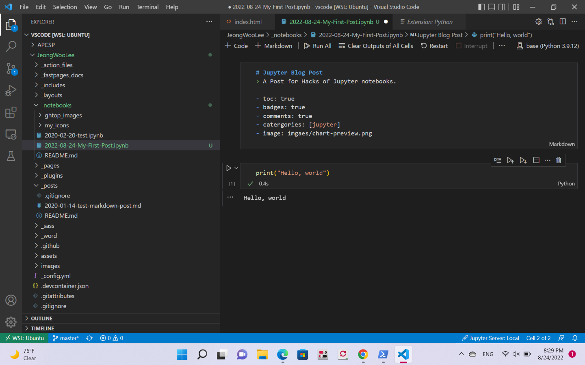

This site is result of APCS tool setup.

Development Environment
commit history
Posts
Aug 30, 2022
Aug 29, 2022
A Post for Hacks of Jupyter notebooks.
Aug 24, 2022
AP cs Hacks
Aug 24, 2022
A tutorial of fastpages for Jupyter notebooks.
Feb 20, 2020
A minimal example of using markdown with fastpages.
Jan 14, 2020